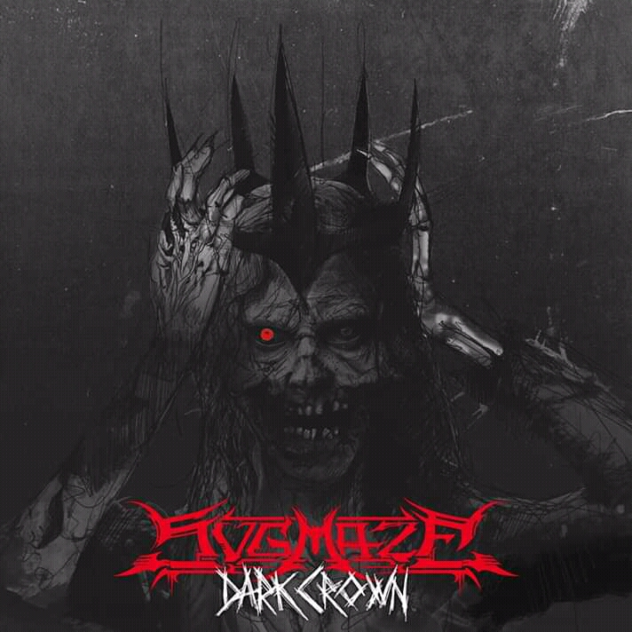
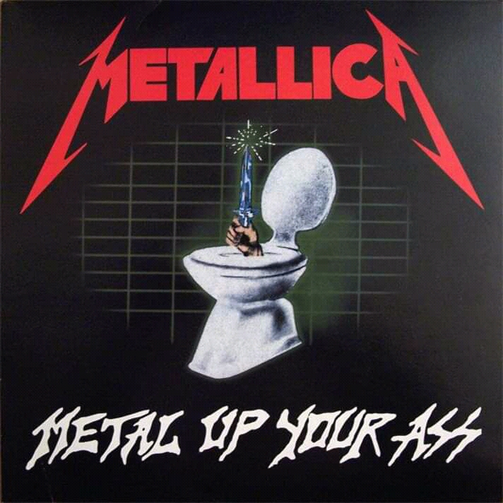
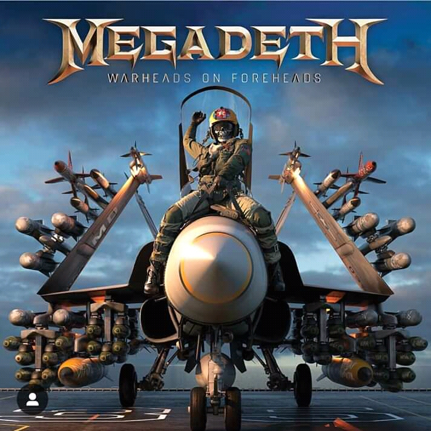
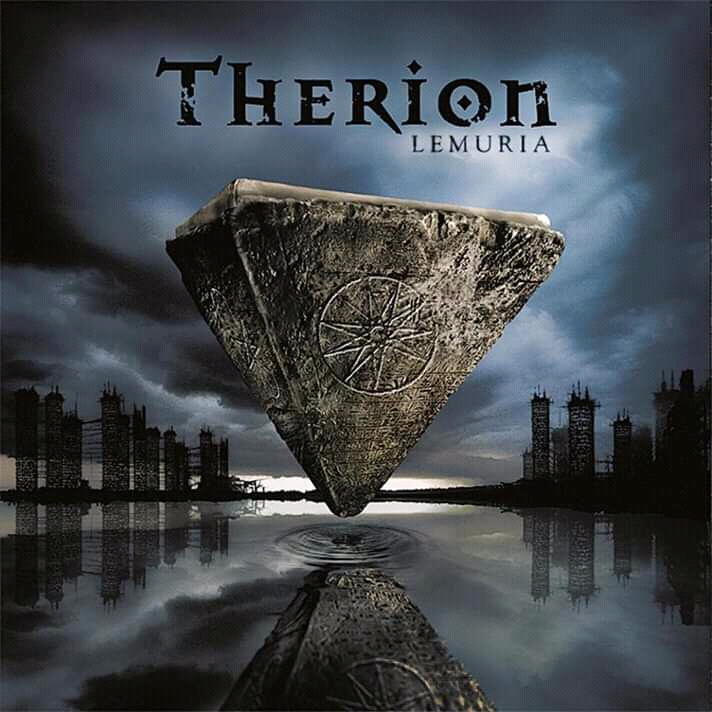
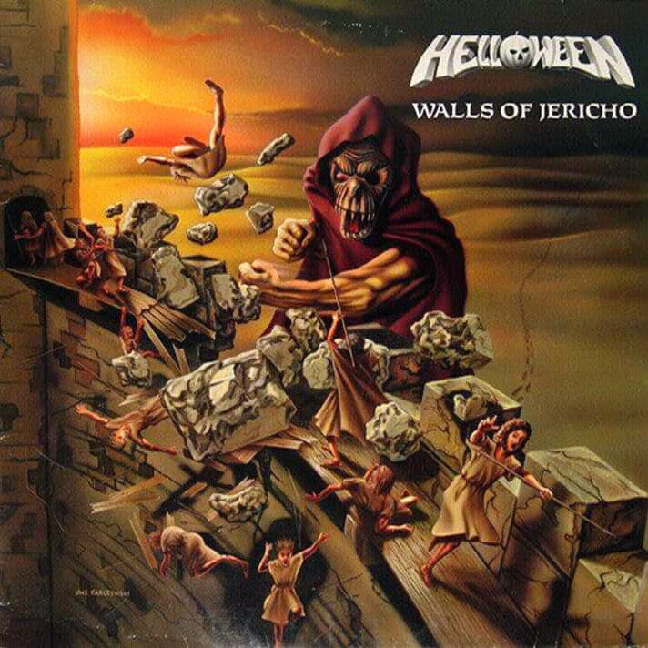
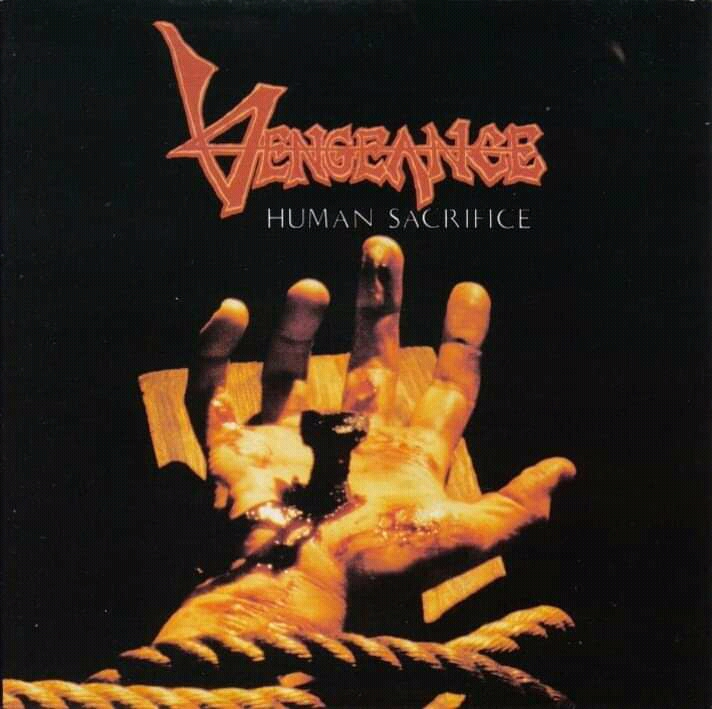
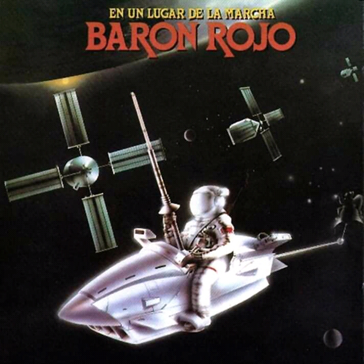

informacion relevante"
- 
- 
- 
- 
- 
- 
- 
INFORMACION SOBRE DIVERSAS BANDAS
introduccion
daremos apertura con algunas de las bandas mas famozas que con el paso de los tiempos e han vuelto legendarias, son bandas de las cuales seguimos escuchando sus canciones en diferentes partes del mundo y nos trasladan a diferentes epocas y nos traen cientos de recuerdos, despues daremos paso a algunas de las bandas que zonaron mucho en algun momento de su epoca y por ultimo mensionaremos algunas de las bandas que comienzan a salir a la luz con muy bunas canciones que de seguro les gustaran.
LED ZEPPELIN
una de las bandas mas conocidas por muchos y de las inspiraciones principales es LED ZEPPELIN, el nombre de la banda surgio a raiz de un mal chiste de Keinth Moon (baterista de la banda THE WHO) que dijo que la banda fracasaria como un zeppelin de plomo, sin embargo el bajista de the who Jhon Entwistle posee su propia version de los hechos: despues de 4 años empece a estar harto de los who, asi que hable con un tio que ahora es jefe de Led Zeppelin, estaba con el en un club en Nueva York, y le dije estoy pensando en dejar el grupo y formar el mio. lo voy a llamar "Led Zeppelin"y como portada del disco voy a poner el Hidenburg en llamas, y unos meses despues empezo a trabajar con Jimmy Page, y como estaban buscando un nombre el sugirio Led Zeppelin, a Page le gusto y salieron con la misma portada que habien planeado .
Jimmy Page y John Paul Jones eran renombrados musicos de sesion en inglaterra que se cnocieron en sesiones de grabaciones de otras bandas y que decidieron unirse despues de deambular cada uno por su propia cuenta con sus propias formaciones cual con mayor o menor exito, cuando les recomendaron al joven cantante de blues llamado Robert Plant quien les recomendo a su vez un baterista .
Led Zeppelin presentó elementos de un amplio espectro de influencias, como el blues, el rock and roll, el soul , la música celta, la música india, la árabe, el folk, e incluso el country. Más de treinta años después de la disgregación de la banda en 1980, la música de Led Zeppelin continúa vendiéndose, disfruta de una amplia difusión radiofónica, y ha demostrado ser una de las bandas más influyentes en la música rock. Hasta la fecha, ha vendido más de 450 millones de álbumes en el mundo,2 incluidos 111 millones sólo en los Estados Unidos,2 y es la segunda banda con más discos de diamante (otorgados cada diez millones de ventas en EE. UU.) de la historia de la música, solo por debajo de The Beatles.
PINK FLOYD
Pink Floyd fue un grupo de rock británico que cosechó gran popularidad gracias a su música psicodélica que fue evolucionando hacia el rock progresivo y el rock sinfónico con el paso del tiempo. Es conocido por sus canciones de contenido filosófico, la experimentación sónica, las innovadoras portadas de sus discos y sus elaborados espectáculos en vivo. Es una de las bandas más importantes e influyentes de la historia de la música rock con más de 300 millones de álbumes vendidos en todo el mundo,4 5 74.5 de ellos solamente en los Estados Unidos.6 Inicialmente el grupo estaba formado por el guitarrista Bob Klose, el baterista Nick Mason, el teclista y vocalista Richard Wright, el bajista y vocalista Roger Waters y el guitarrista rítmico y vocalista principal Syd Barrett, quien se convirtió en el primer líder de la banda. Sin embargo, el extraño comportamiento de éste último, causado por el excesivo consumo de drogas, especialmente LSD,1 hizo que fuera sustituido en 1968 por David Gilmour (1946–), cristalizando así la formación clásica del grupo tras la anterior marcha de Klose. Pink Floyd comenzó con gran éxito en la escena underground londinense a finales de los años sesenta, con Syd Barrett como principal compositor. La salida de Barrett, aquejado de problemas mentales, hizo que el cantante y bajista Roger Waters se convirtiera gradualmente en la fuerza conductora y dominante en la primera mitad de los años setenta, la época de mayor éxito en ventas de la banda, hasta su abandono en 1985.
El grupo grabó durante esta época muchos álbumes que se convirtieron en grandes éxitos comerciales, como The Dark Side of the Moon (1973), Wish You Were Here (1975), Animals (1977) y The Wall (1979). En 1985, Waters declaró la extinción de Pink Floyd, pero los demás miembros, encabezados por Gilmour, siguieron dando vida al grupo hasta ser demandados por Waters debido a los derechos del nombre de la banda, ya que habían continuado grabando y actuando bajo el nombre de Pink Floyd, mientras que Waters pensaba que dicho nombre no debía seguir siendo utilizado. Tras el juicio, Waters obtuvo los derechos exclusivos sobre toda la imaginería que desplegaban en sus conciertos (incluido su famoso cerdo volador) y los derechos sobre el espectáculo audiovisual de The Wall (excluyendo los tres temas que compuso Gilmour para la obra: «Young Lust», «Run Like Hell» y «Comfortably Numb») y sobre todos los temas incluidos en The Final Cut, mientras que el resto del grupo podía seguir usando el mismo nombre. Tras superar estos problemas legales, Gilmour, Mason y Wright disfrutaron del éxito comercial con A Momentary Lapse of Reason (1987), disco en el que Wright participó como teclista asalariado y no como miembro de la banda, y con The Division Bell (1994), último disco de estudio del grupo en el que ya aparecieron Gilmour, Mason y Wright como componentes de la banda. Waters, por su parte, se embarcó en una carrera como solista y no se volvió a reunir con Pink Floyd hasta 24 años después, el 2 de julio de 2005 en el concierto Live 8 en Londres.
THE ROLLING STONES
The Rolling Stones es una banda británica de rock originaria de Londres. Desde su gira por los Estados Unidos en 1969 se autonombraron «La banda de rock and roll más grande del mundo».nota 1 2 Fue fundada en abril de 1962 por Ian Stewart, al que se le unieron Mick Jagger, Keith Richards, Brian Jones, Geoff Bradford y Dick Taylor. Tony Chapman (otros citan a Mick Avory) los apoyó en la batería durante sus primeras presentaciones. Tras la salida de Bradford, Taylor y Chapman, ingresaron el bajista Bill Wyman y el baterista Charlie Watts en lugar de estos dos últimos, respectivamente. A petición de su mánager, Stewart fue retirado de la alineación en 1963, aunque siguió colaborando en las sesiones de grabación y como su road manager. Brian Jones fue despedido en 1969, falleciendo al poco tiempo, y reemplazado por el guitarrista Mick Taylor, que dejaría el grupo en 1975 y sería reemplazado por Ron Wood. Con el retiro de Bill Wyman en 1993 incluyeron al bajista Darryl Jones y aunque toca con la banda desde la grabación del álbum Voodoo Lounge en 1994 hasta la actualidad, no es un miembro oficial. Sus primeras producciones incluían versiones y temas de blues, rock and roll y R&B norteamericano, no obstante, con el pasar de su trayectoria adicionaron toques estilísticos de otros géneros para adaptarse a la época, con influencias diversas como música psicodélica, country, punk, música disco, reggae y música electrónica.
Pese a encabezar junto a The Beatles, con los que siempre rivalizaron en popularidad,3 la «invasión británica» en los primeros años de la década de 1960,nota 2 4 no fue sino hasta el lanzamiento de «(I Can't Get No) Satisfaction» en 1965 que alcanzaron el estrellato internacional y se establecieron como una de las bandas más populares en la escena musical.5 A la fecha, la banda ha editado veinticinco álbumes de estudio6 y colocado treinta y dos sencillos dentro de las diez más populares de Reino Unido y los Estados Unidos.7 Las ventas totales de The Rolling Stones se estiman 2008 y 250 millones de discos,9 10 convirtiéndolos en uno de los artistas más exitosos de todos los tiempos. Son considerados una de las más grandes e influyentes agrupaciones de la historia del rock,11 siendo la agrupación que sentó las bases del rock contemporáneo.12 13 14 Contando desde sus inicios con el favor de la crítica, algunos de sus materiales están considerados entre los mejores de todos los tiempos,15 16 17 18 entre los que destacan Beggars Banquet (1968), Let It Bleed (1969), Sticky Fingers (1971) y su considerada obra máxima Exile on Main St. (1972).nota 3 En 1989 fueron incluidos en el Salón de la Fama del Rock and Roll, y en 2004 la revista estadounidense Rolling Stone los colocó en el puesto No. 4 en su lista de Los 100 Mejores Artistas de todos los Tiempos.19 Ningún grupo de rock hasta la fecha ha sostenido tan duradera y todavía mundialmente reconocida trayectoria como The Rolling Stones; con Jagger, Richards y Watts como únicos miembros fundadores en activo, continúan siendo la banda más longeva en la historia del rock.
IRON MAIDEN
Iron Maiden es una banda británica de heavy metal fundada en 1975 por el bajista y único miembro original Steve Harris. Tras varias audiciones y varios cambios en su formación, ésta se asentó con el vocalista Paul Di'Anno, los guitarristas Dave Murray y Dennis Stratton y el batería Clive Burr. Publicaron su álbum debut homónimo en 1980, convirtiéndose rápidamente en uno de los grupos más representativos de la nueva ola del heavy metal británico. Más tarde ese mismo año, Stratton fue reemplazado por el guitarrista Adrian Smith, con el que publicaron el exitoso y consistente Killers (1981), 1 el cantante Bruce Dickinson reemplazaba a Di'Anno, marcando el inicio de una serie de lanzamientos de impacto, entrando en lo más alto (el Top 10) de las listas de los más vendidos.
BLACK SABBATH
Black Sabbath es una banda britanica de heavy metal formada en 19675 en Birmingham por Tony Iommi (guitarra), Ozzy Osbourne (voz), Geezer Butler (bajo) y Bill Ward (batería). Desde entonces, la banda ha sufrido multitud de cambios de formación, con más de veinticinco antiguos miembros.6 Formados originalmente como una banda de blues rock llamada en un principio Polka Tulk y posteriormente, Earth, la agrupación incorporó letras sobre ocultismo y terror con guitarras afinadas de modo más grave, cambiando su nombre por Black Sabbath y consiguiendo varios discos de oro y platino en la década de 1970. Al ser una de las primeras y más influyentes bandas de heavy metal de todos los tiempos,7 Black Sabbath ayudó a desarrollar el género con publicaciones tales como Paranoid, álbum que fue cuatro veces disco de platino.8 Han vendido más de quince millones de copias sólo en los Estados Unidos.
Ozzy Osbourne fue despedido de la banda en 1979 para ser reemplazado por Ronnie James Dio, antiguo vocalista de Rainbow. Sin embargo, Black Sabbath vio cómo, a lo largo de las décadas de 1980 y 1990, pasaron cuatro vocalistas más: Ian Gillan, Glenn Hughes, Ray Gillen y Tony Martin. La alineación original se reunió en 1997 y publicó un álbum en directo, Reunion, cuya canción «Iron Man» ganó el premio Grammy en 2000, treinta años después de su publicación original en Paranoid. Fueron incluidos en el Salón de la Fama del Rock en el año 2005. La alineación de comienzos de los años 1980 formada por Iommi, Butler, Dio y Vinny Appice se reunió en 2006 bajo el nombre de Heaven and Hell, título sacado del álbum de Black Sabbath del mismo nombre.
QUEEN
Queen es una banda de rock británica formada en 1971 en Londres por el guitarrista Brian May, el cantante Freddie Mercury y el baterista Roger Taylor, con el bajista John Deacon completando esta alineación al año siguiente. Si bien presentan las bajas de dos de sus miembros (Mercury falleció en 1991 y Deacon se retiro de la industria musical), lo cierto es que la sociedad artística nunca se disolvió.3 El grupo gozó de un gran éxito en Gran Bretaña a mediados de los años 1970 con álbumes como Sheer Heart Attack en 1974 y A Night at the Opera del año siguiente. Este último álbum llamó la atención internacionalmente, colocando a Queen en un primer plano de la escena musical. Tuvieron una significativa repercusión en los Estados Unidos recién a mediados de los años 1980, ya con un numeroso repertorio de éxitos.1 Se destacaron por su diversidad musical, arreglos en múltiples capas y armonías vocales. Se les considera una banda de gran influencia en el desarrollo del hard rock y el heavy metal, incorporando elementos del glam rock, rock progresivo, folk, blues y pop. Fue la primer agrupación musical en hacer de sus conciertos espectáculos muy vistosos mediante el uso bombas de humo, flashpots, luces móviles y el principal componente, el carisma de Freddie Mercury, además de hacer participar al público del recital.4 Precisamente, se han reconocido actuaciones como en el Live Aid en 1985 o el celebre concierto de estadio de Wembley de 19865 como los mejores recitales de rock de la historia.
Aunque el cuarteto siempre se encontró con una grandísima aceptación, popularidad y éxito comercial, en su momento, la crítica no tomó en serio al conjunto, siendo uno de los casos más recordados cuando la publicación musical estadounidense Rolling Stone tildo al álbum Jazz de "fascista".1 Tienen en su haber un total de quince álbumes de estudio, cinco álbumes en vivo y numerosas recopilaciones. Desde la muerte de Mercury y el retiro de Deacon del mundo musical, May y Taylor se han presentado juntos ocasionalmente en eventos especiales y programas televisivos como músicos invitados junto a otros artistas y/o bandas. Desde 2004 a 2009 trabajaron junto a Paul Rodgers, bajo el nombre de Queen + Paul Rodgers. Queen ha vendido más de 300 millones de copias a nivel mundial.8 9 10 11 Queen fue nombrado el decimotercer mejor artista de hard rock de todos los tiempos en una lista elaborada por VH1 (VH1's 100 Greatest Artists of Hard Rock list).
MEGADETH
es una banda estadounidense de thrash metal, formada en Los Ángeles, California. Fue creada en 1983 por Dave Mustaine (vocalista, guitarrista y compositor principal), después de que fuera expulsado de Metallica, donde ocupaba el puesto de guitarrista principal. Es comúnmente mencionada como una de los cuatro grandes del thrash metal, junto a Metallica, Slayer y Anthrax.
Megadeth es conocida por su distintivo estilo en las guitarras, la forma peculiar de cantar de Mustaine, la complejidad musical conformada por la gran técnica que contiene su música, y los temas de sus letras, a menudo sobre el antisistema, política, guerra, y, en varias ocasiones, relaciones sentimentales.
A través de sus más de 30 años activos, Megadeth ha tenido gran cantidad de miembros oficiales, siendo Mustaine el único permanente y el principal compositor; por su parte, el bajista David Ellefson ha participado en la mayoría de sus discos y giras, estando ausente solo por 8 años. En todo este tiempo, la banda ha lanzado quince álbumes de estudio, tres EP y dos álbumes en vivo.
Megadeth consiguió varios álbumes de platino y de oro (seis seguidos en Estados Unidos), incluido el álbum multi-platino y nominado al Grammy, Countdown to Extinction, en 1992. Ha recibido en total doce nominaciones a los premios Grammy y obtuvo uno en 2017 por la canción «Dystopia» del álbum homónimo. Además, ha figurado varias veces en el top 10 de las listas de Billboard, vendiendo más de 50 millones de copias en todo el mundo
Stuck in the Sound
Stuck in the Sound se formó en París en 2002.5 Los cuatro miembros del grupo compartieron el amor por la banda Nirvana y su vocalista Kurt Cobain.31 El nombre Stuck in the sound provino de que cuando la banda empezó se encerraron en un sótano por lo que literalmente estaban "atascados en el sonido".6 El grupo lanzó su álbum debut de estudio el 1 de octubre de 2004 en un disco compacto producido por la misma banda, Stuck Records.3 El 6 de octubre de 2006 lanzaron su primer EP, «Toy Boy EP», que contiene cuatro temas, tres de ellos de su segundo álbum.
Dos meses después del lanzar su EP; su segundo álbum de estudio, lanzado comercialmente, «Nevermind the Living Dead» fue lanzado como descarga, CD y LP en Francia y como descarga en otros países. A pesar de que el álbum no entró a ninguna lista nacional una serie de canciones del mismo álbum fueron incluidas en varias compilaciones de Never On the Radio también en Les Inrockuptibles Made In France7 y «Toy Boy» fue incluido en L'Alternative Rock de EMI France. Toy Boy fue incluida en el soundtrack de Guitar Hero World Tour.
Durante el mismo año la banda comenzó a grabar su tercer álbum de estudio. Lanzaron el sencillo «Ouais» el 1 de diciembre de 2008 para predecer al álbum y el 26 de enero de 2009, Shoegazing kids para moderar él éxito comercial logrando una posición máxima del No° 69 en la lista de álbumes franceses y quedándose en el top 200 por un total de seis semanas. En Francia, el sencillo llegó a la posición No°. 69, como máximo vendió más de 10, 000 copias. «Shoot Shoot» el segundo sencillo de «Shoegazing Kids» fue presentado el 29 de junio De 2009
Mägo de Oz
Es una banda española de folk metal fundada el 7 de julio de 1988 por el baterista Txus di Fellatio en el barrio de Begoña en Madrid. Inicialmente se llamó Transilvania, en honor a la canción homónima del sexteto inglés Iron Maiden, y adoptó el nombre definitivo de Mägo de Oz en 1989.
Se caracterizan por su heterogénea y peculiar propuesta musical de mezclar metal y hard rock tradicional, con la música clásica, el rock and roll, el blues, la música celta, la música folk, entre otros. Sin embargo, la música celta es la que más ha predominado en el sonido de la banda hasta la actualidad.
Consagrados como una de las bandas más importantes del heavy metal español, saltaron al éxito en 1998 con el disco La leyenda de La Mancha, llegando a las listas de éxitos musicales de España con canciones como «Molinos de viento» o «Fiesta pagana», esta última de su primer disco conceptual doble, Finisterra.
La fama del grupo y su éxito, tanto en la prensa especializada como en los medios convencionales a nivel nacional e internacional, especialmente en Hispanoamérica, se hizo aún mayor tras la publicación en 2003 del disco Gaia, el primer trabajo de una trilogía conceptual que sería completada con los discos Gaia II: La voz dormida (2005) y Gaia III: Atlantia (2010) de igual o mayor éxito. Destaca la escenografía de sus conciertos, que incorpora desde barcos piratas hasta catedrales medievales, pirotecnia y varias puestas en escena inéditas en el panorama español. En el año 2008, se les entregó el disco de diamante por superar el millón de copias vendidas de toda su obra discográfica solamente en España.456 Se calcula que habrían vendido más de dos millones de discos entre España y Latinoamérica hasta el año 2013.
A lo largo de su carrera, Mägo de Oz ha sufrido numerosos cambios de integrantes, siendo Txus di Fellatio el único miembro original que continúa en la banda, su ultimo album es "IRA DEI" el cul nos vuelve a recordar sus primeras canciones y ese estilo original que tiene esta gran banda.
Audioslave
fue un grupo estadounidense de rock alternativo formada en Los Ángeles, California en 2001 por el vocalista de Soundgarden, Chris Cornell, y la sección instrumental de Rage Against the Machine: Tom Morello(guitarra), Tim Commerford (bajo y coros) y Brad Wilk (batería).
Al principio, la crítica describió el sonido de Audioslave como una mezcla de Soundgarden y de Rage Against the Machine,4 aunque después de su segundo disco, Out of Exile, la prensa concibió que la banda había logrado establecer una identidad propia. El sonido típico de la banda se gestó al fusionar el hard rock de los años 1970con el rock alternativo de los años 1990.5 Además, Morello añadió sus solos de guitarra a esta mezcla.6 Al igual que con Rage Against the Machine, la banda se jactó de que nunca se emplearon samples en las grabaciones de sus discos, usando solo los sonidos de la guitarra, bajo, batería y voces.
En 2007, después de lanzar tres exitosos álbumes, haber sido nominados tres veces a los premios Grammy, vender más de siete millones de discos,8 y convertirse en la primera banda estadounidense en actuar en un concierto al aire libre en Cuba,9 Cornell anunció que dejaba la banda «debido a conflictos personales irreconciliables, además de diferencias musicales».10 Como los otros tres miembros estaban ocupados con la reunión de Rage Against the Machine, y Cornell y Morello habían lanzado álbumes en solitario, la banda se separó de forma definitiva.
ESO ES TODO POR EL MOMENTO MIS AMIGOS, ESPERO QUE ENTRE TODOS LA PAGINA PUEDA CRECER PARA BRINDARLES UN MEJOR SERVICIO, GRACIAS :D